大倉公園と管理棟・休憩棟の 3D モデル（Opus 版）
ワタナベエイジ展「Morning Monsters / W Eiji」（2025）の会場だった大倉公園と、管理棟・休憩棟を推定で復元したものです。記録写真の撮影位置を写真の中の建具・作品の角から解き、その視点から描いた画面と写真を照らし合わせて、建物の寸法・建具・作品の配置を合わせ込みました。公園と二棟を一つのモデルにまとめ、ブラウザでは公園から二棟の中まで一続きに歩けます。室内の寸法・間取りには推定が含まれます。検討のために期間を限って置いています。
このモデルの要点
- 公園：国土地理院の地図データと航空写真、公園の計画平面図、樹木調査の一覧（1,460 本）をもとに、地形・門・園路・池・木を置いています。公園の外は作っていません。
- 休憩棟・管理棟：2007 年の実測図（平面・屋根伏・立面、1/100）をもとに、外形・間取り・建具・屋根を作っています。
- 作品：渡辺英司さんの 24 点と屋外の作品、渡辺英治さんの 16 点と付随の展示を、記録写真と照らして置いています。
- 推定を含むところ：室内の細かな寸法、写真に写っていない場所、撮影日によって変わる展示の状態。
最終更新：2026 年 10 月 13 日。《蝶瞰図（エデンのトンネル）》を、管理棟ロビーの中庭側の窓ガラスに置き直しました（カタログの写真 1 枚からの推定）。これまでの経過は、下の「記録」の PLAN にあります。
ブラウザで歩く
「棟」で公園・休憩棟・管理棟を選ぶとその入口へ移り、「視点」でその棟の鑑賞位置へ移れます。ドラッグで見回し、WASD・矢印キーか画面右下の矢印で移動し、ホイール（トラックパッドのピンチ）か ＋ − で拡大・縮小します。右上の地図を押すとその場所へ移ります。左上の札に近くの作品を出し、「作品について」で作品名・作者・場所を見られます。下の帯の「案内」で画面に重なる表示を隠し、「順路」で棟ごとの順路を自動で歩き、「光」で昼・夕方・曇りを切り替えます。休憩棟の樽の間では梯子を上って《空の夢／空の上》の中を覗けます。合計約 80MB のデータを読むので、表示まで少し待ちます。パソコンの Chrome で確認しています。
確認画像
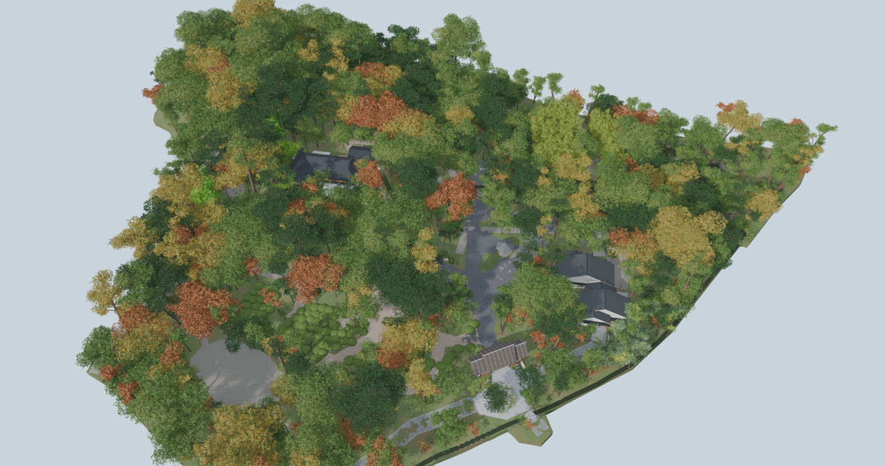
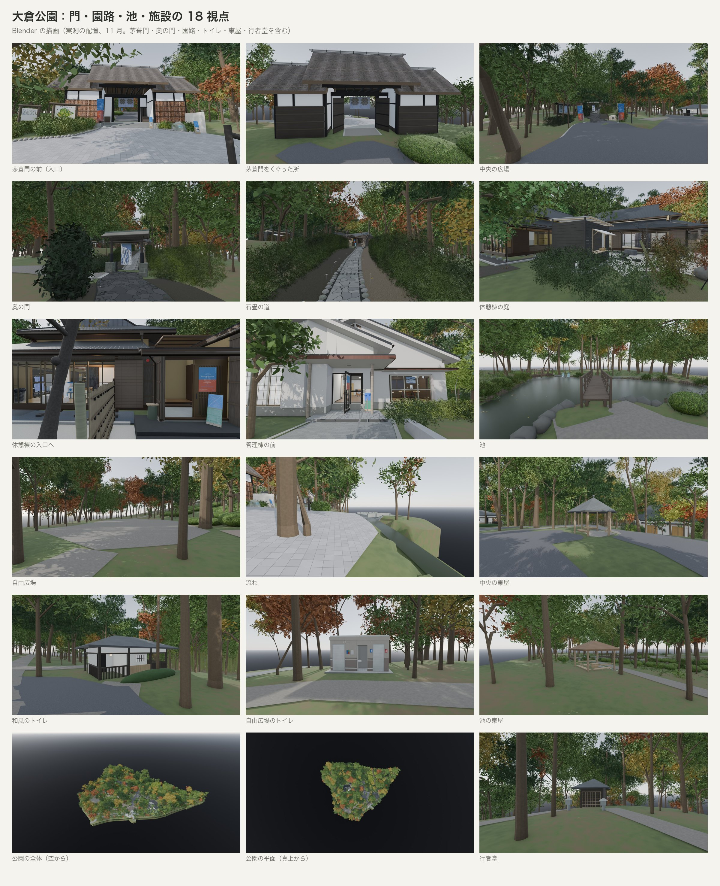
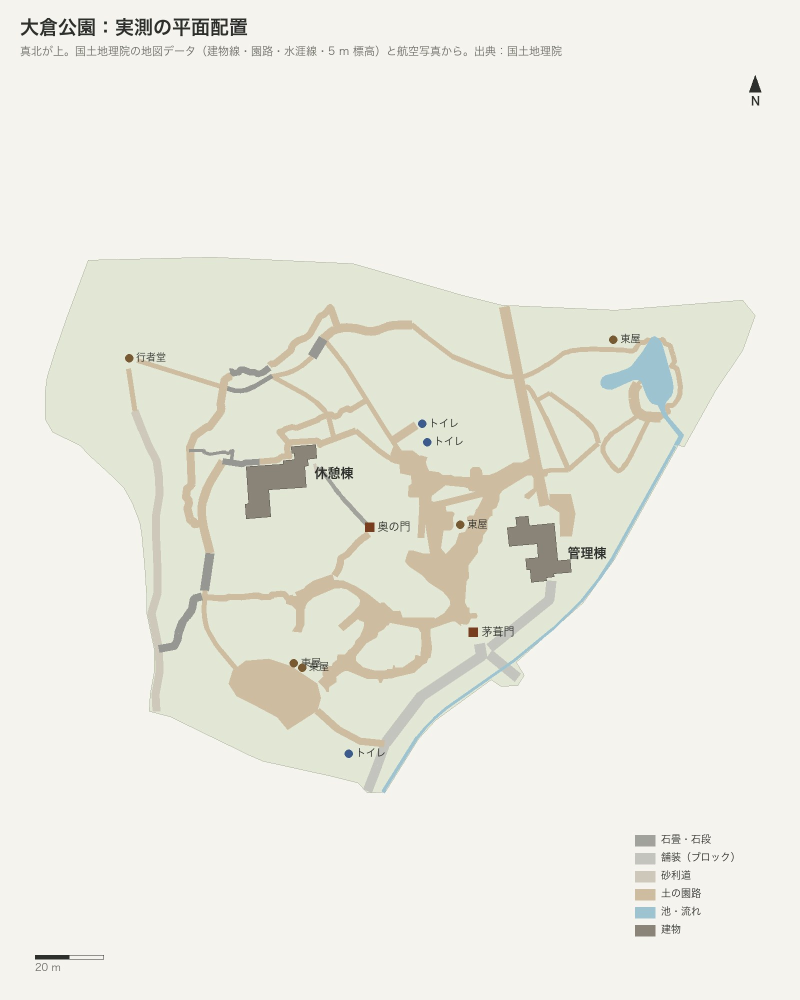
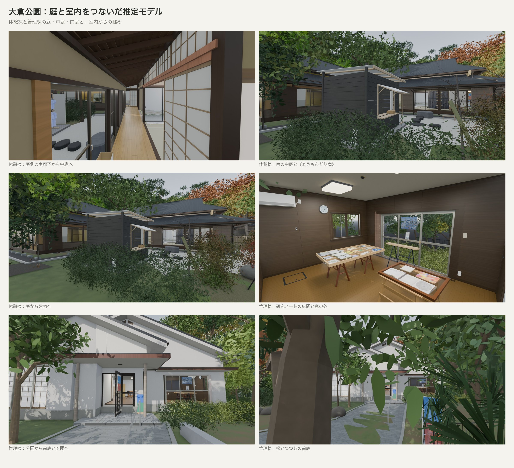
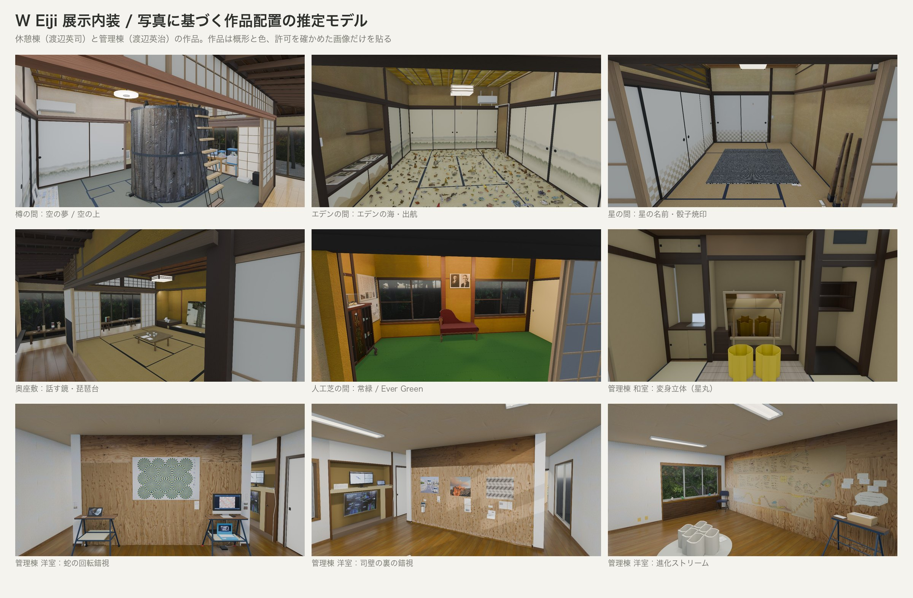
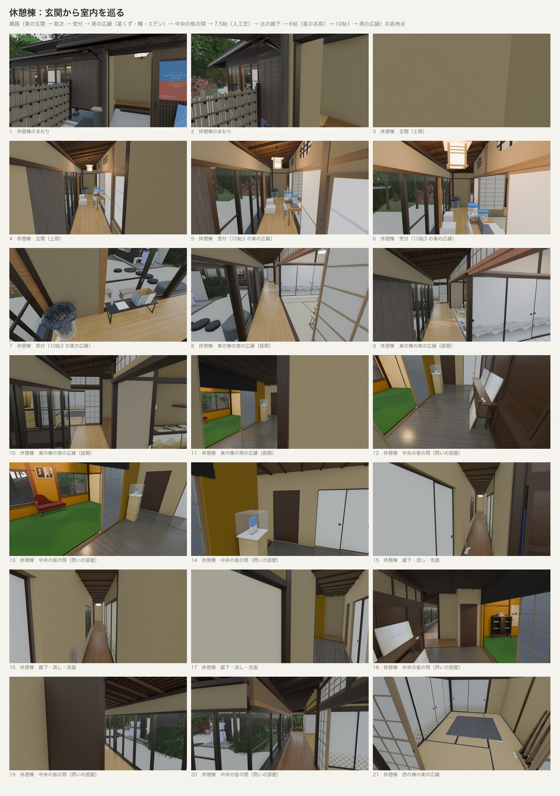
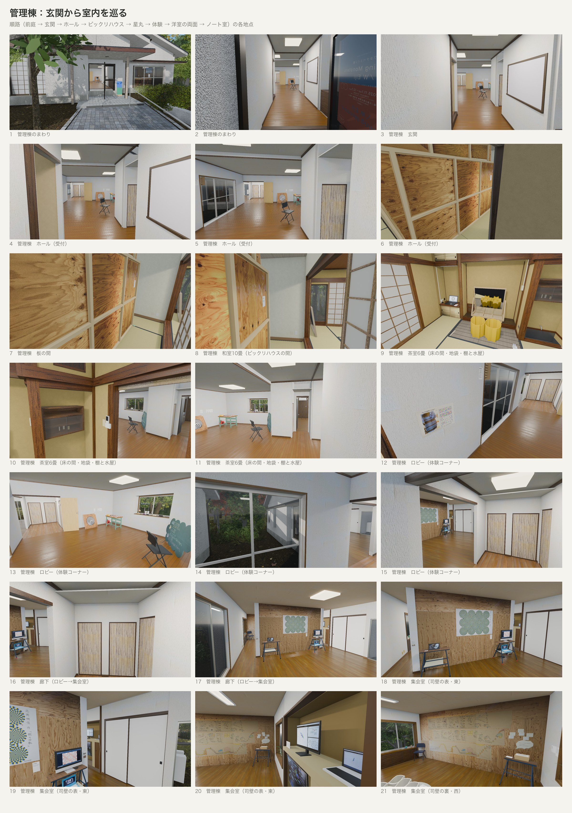
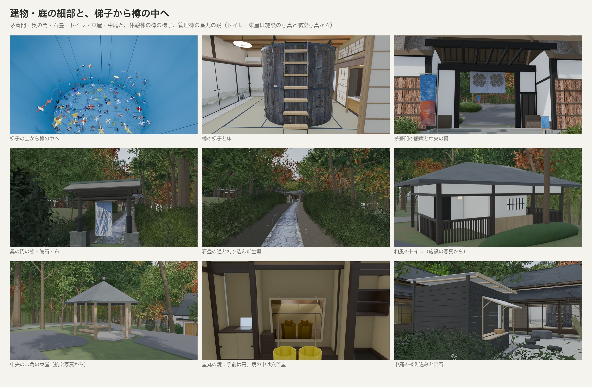
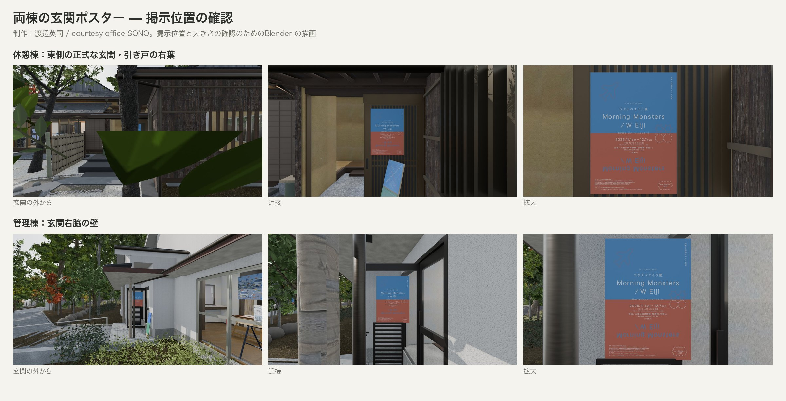
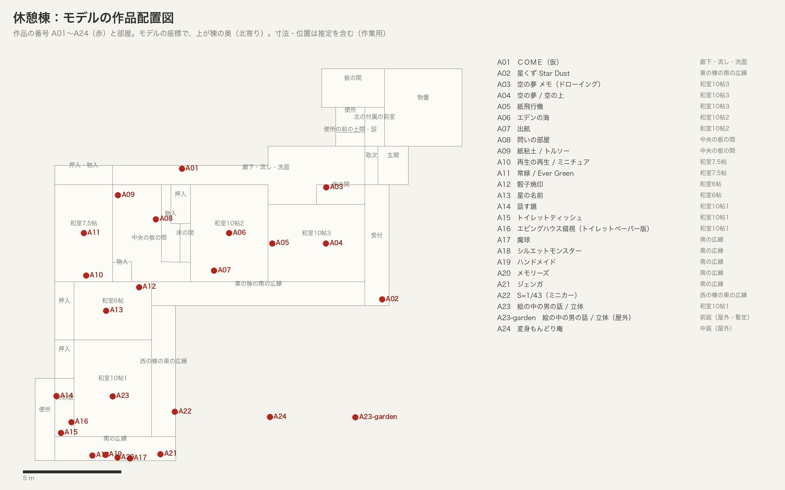
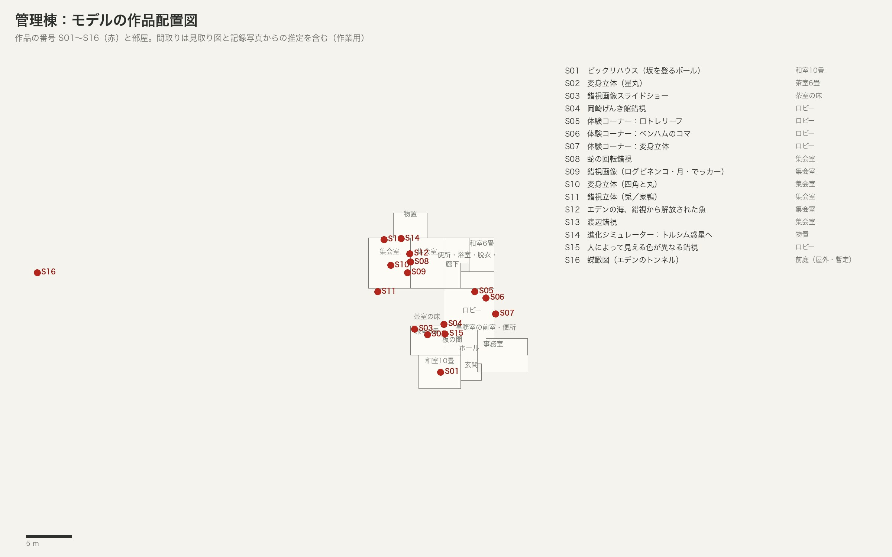
地形・建物線・園路・池の位置：国土地理院の基盤地図情報（建物・道路縁・水涯線）と数値標高モデル（5 m メッシュ）を加工して作成（出典：国土地理院）。林の中の園路と池の橋の位置：OpenStreetMap（© OpenStreetMap contributors、ODbL）。
記録
- README（開き方と操作、組み立てと検査の手順）
- PLAN（根拠資料、推定の範囲、実装の記録、制作者に確かめたいこと）
- PROGRESS（作業の進み具合、既知の問題）
- 照合表（記録写真と描画の照合の数値。比較画像は含めていません）
作品は概形と色で表し、錯視図版や作品写真は許可を確かめたものだけを貼っています：玄関のポスター（制作：渡辺英司 / courtesy office SONO）、管理棟の《蛇の回転錯視》のパネル（Rotating snakes, 2003：北岡明佳。展示写真からの転写）、《エデンの海、錯視から解放された魚》の試作プリント（写真提供：渡辺英治／錯視画像：北岡明佳）、進化ストリームの 3 図（図：渡辺英治／撮影：青木兼治）、月の錯視（元写真の撮影者は未確認）とログビネンコ錯視（A. Logvinenko の図）のパネル（展示写真からの転写）、休憩棟の作品の写真転写 19 面（作品：渡辺英司／記録写真：青木兼治。作品写真の一部は撮影者未確認）、公園の茅葺門の暖簾 2 枚・奥の門の布 2 幅・のぼり（展示写真からの転写）。管理棟の《人によって見える色が異なる錯視》の掲示（会場で撮った写真からの転写。掲示の中のドレスの写真は "The Dress", 2015、オリジナルは Tumblr への投稿写真）、《進化シミュレーター》のパネル（Artificial Evolution: Open Ended Speciation：Lana Sinapayen・Jane Adams）と画面、《蛇の回転錯視》の部屋の 3 つの画面、管理棟の説明の札 26 枚、司壁の合板の木目と印字（いずれも記録写真からの転写。記録写真：青木兼治）。休憩棟の《空の夢 / 空の上》の樽の外側の板と、樽の中の飛行機の模様（記録写真からの転写。作品：渡辺英司／記録写真：青木兼治）。襖絵などは写真を貼らず、模様で表しています。記録写真は撮影位置の推定と照合にだけ使い、掲載許諾の確認前のため、写真そのものと写真との比較画像は含めていません（ブラウザ版の「記録写真を重ねる」機能も、この公開版では外しています）。